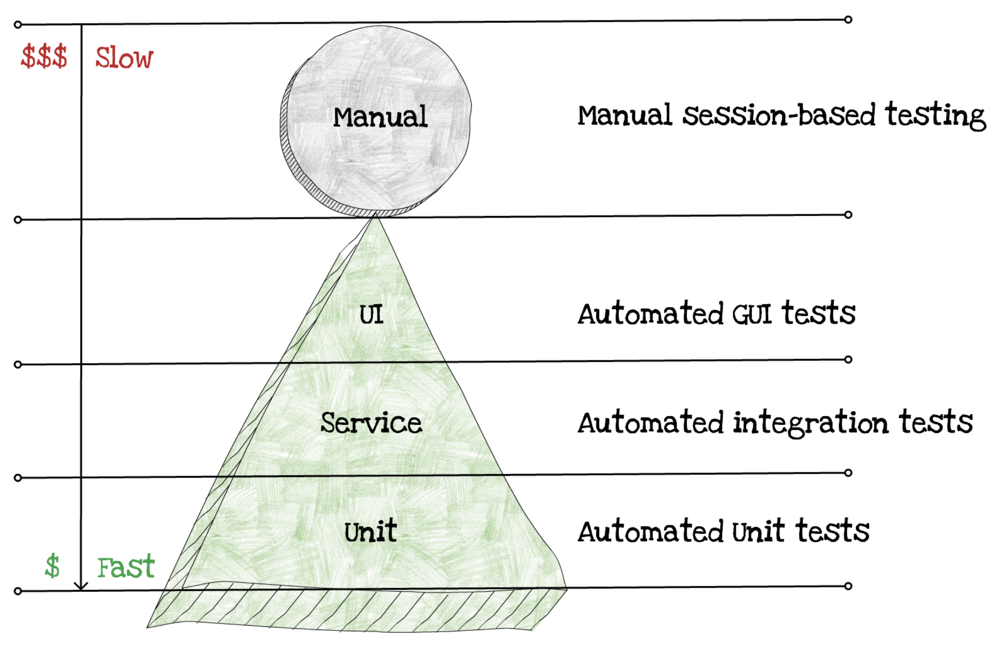
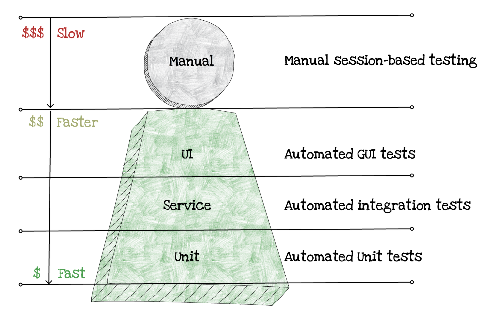

Designing Testable Serverless Functions
Writing all that serverless code is great, but as you could see debugging serverless apps wasn't very fun, so its much better to test beforehand. We need to ensure and be confident in the current implementation and ensure that any future modifications don't break it.
How do we test traditional applications? In the following diagram you can see the traditional testing pyramid:

As you can notice the biggest cost here are the manual tests. The ones we do the most are unit tests, then integration and the least used and the most costly are the automated UI tess.
Does serverless change how do we tests?
The major difference lies in the infrastructure and its cost.

The most important thing to notice here is that the cost of all tests has reduced dramatically for both integration and automated UI tests. The reason for that lies in the reduced spend for infrastructure. You no longer need to pay in advance for new infrastructure, those are available out of the box.
Writing your first serverless tests
In general, the codebase you will see both online and in production will reflect the past traditional practices of writing tests.
Let's take a look at our simple enter-expense Lambda function that kind of works, but unfortunately gets the whole design wrong. It listens to API events, and when a request comes, it picks up the expense data and saves its data to a DynamoDB table.
exports.handler = async event => {
const item = JSON.parse(event.body);
item.expenseId = uuidv4();
const params = {
TableName: TABLE_NAME,
Item: item
}
try {
await dynamoDb.put(params).promise()
} catch (error) {
return {
statusCode: 500,
body: JSON.stringify(error)
}
}
};
The problem with this function is that it’s almost impossible to test well in an automated way. Sure, we can load it even without running in Lambda, but we’d still have to connect to a real API GW service. We could run tests with simulated events that look similar to API events, but that will still be very slow and brittle. It will be difficult to test error scenarios. Things like that are difficult to automate and simulate. Because this function is difficult to test properly, many important edge cases just won’t be covered.
To be able to inspect each of those separately, we first need to break down the code into several functions. One good guide for that is the Hexagonal architecture pattern, also called Ports-and-Adapters.
The Hexagonal Architecture is a design pattern where the core of an application does not directly talk with external resources or allow any external collaborators to talk to it directly. Instead, it talks to a layer of boundary interfaces, using protocols designed specifically for that application. External collaborators then connect to those interfaces,and translate from the concepts and protocols important for resource to the ones important for the application. For example, the core of the application in a Hexagonal Architecture wouldn’t directly receive Lambda events, it would receive something in an application-specific format, say with amount, currency, expenseData and issuer describing the expense received. An adapter would be responsible for converting between the Lambda event format and the application event format. You could call it an expense-parser.
Similarly, our enter-expense Lambda function would not talk to DynamoDB directly, but it would talk to a boundary interface that is specific for its needs. For example, we require a DynamoDB Document Client which has a function: putItem. In the Hexagonal Architecture we would then write a StorageRepository this implements that particular interface, and talks to DynamoDB to store an expense.
This separation would allow us to test DynamoDB integration without worrying about internal workflows. It would also allow us to test internal error handling easier, by providing a different database interface that we could control easily, and trigger errors.
Let’s start to break this monolithic serverless function apart, and lets do this guided separation as the part of this section's task.
Task
Create an
expense-parserPort that would handle the incoming API request parameters and return an expense object that contains:- issuer,
- expenseDate,
- description,
- amount,
- currency,
- location
Create a
storage-repositoryAdapter which will implement the DynamoDB interface.Refactor your
enter-expenseLambda function core to utilize these ports and adapters.
Hints
Here are a few hints to help you with this task:
The
expense-parseris basically a class / transformer that takes in a regular API GW POST HTTP request and should return the Expense attributes. In case of an error it should throw an error. Remember that the same parser will be used for both list, update and enter expenses Lambda functions.You can make the
storage-repositorya class with the following methods:save, it should receive theissuer,expenseDate,description,amount,currency,location, and should not return anything. In case of an error it should throw it.list, takes in no parameters.update, should behave similarly as thesave, but with one interesting exception, it needs an API what if the expense doesn't exist? All three methods should call corresponding DynamoDB Document Client methods. Don't forget that!
Take time to discusss with your group on how would you share both the storage-repository and the expense-parser with the remaining two Lambda functions. Feel to Google it as well :)